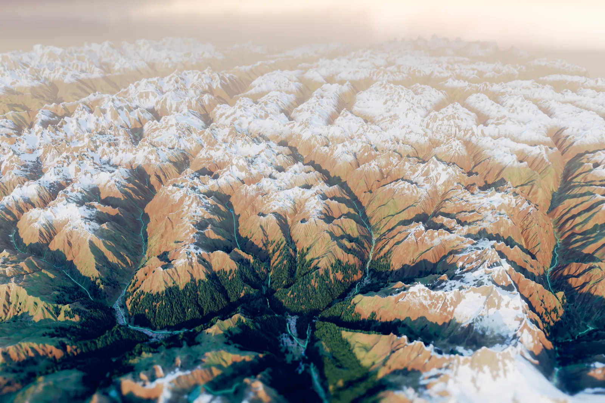

Swat Valley
Kalam · Utror · Ushu · Mahodand · Mingora
A true-to-the-ground illustrated map of Swat: every ridge, river, road and stupa where it really is.
Upper Swat seen from the south, heights exaggerated. Drawn from open elevation data.
Two valleys, one true map
Each one opens as a map you can fly, tilt and read.
What you can do
-
Explore in golden light
Fly over the 3D map at golden hour, then slide the sun to any time of day and watch the ridges cast their shadows.
-
Every place, with its sources
Each place has its story, timeline and facts. Every fact is quoted from its source, with a link to read more.
-
Plan a day on the real roads
Choose from the places on the map and see the day drawn along the roads. Times follow the road type, paved, jeep or track, and are labelled estimates.
-
Save a valley for offline
Download a whole valley once and keep exploring in the mountains, where the signal drops out.
Swat through time
Six eras, from the grave culture of the middle Swat River to the floods of 2025. Each event links to its source.
Real data sets the facts; AI only paints.
Terrain, roads, rivers, lakes and places come from open data and sit at their true coordinates. Nothing is ever moved. Artificial intelligence paints the surface on top of that geometry and never decides where anything is. The day planner chooses only among options the app has measured.
Two exaggerations are allowed, and the map says so: heights are stretched to read as mountains, and landmarks are drawn larger than life. A handful of landmark shapes were generated from Commons photos with an open image-to-3D model (TRELLIS), and the map credits them.
- Copernicus DEM GLO-30
- Terrain heights at 30 m
- ESA WorldCover 2021
- Forest, meadow, snow, water and towns
- Sentinel-2 cloudless 2016, by EOX
- Ground colour from satellite imagery
- OpenStreetMap
- Roads, rivers, lakes, peaks and place names
- Wikimedia Commons
- Photographs, each credited and openly licensed